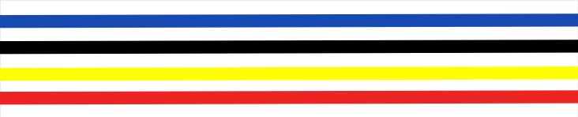

Un parcours
structuré et progressif
Le Vovinam Việt Võ Đạo organise sa progression en ceintures colorées. Chaque couleur symbolise une étape de maîtrise technique et de développement personnel, fidèle à la philosophie du fondateur Nguyễn Lộc : « Corps d'acier, cœur de bonté ».
Chaque grade est obtenu après une durée minimale de pratique et la maîtrise du programme associé. Le chemin jusqu'au plus haut grade représente plusieurs décennies de pratique assidue.
À chaque niveau correspond un titre officiel : de l'Élève (Võ Sinh) au Grand Maître (Võ Sư Chưởng Môn), la progression reflète à la fois la maîtrise technique et la maturité humaine.
Signification des couleurs
Symbolise la couleur de l'espoir et de l'océan immense, avec le sens que le pratiquant nourrit en lui l'espoir d'avancer en profondeur dans le domaine des arts martiaux et de cultiver l'esprit de la voie martiale.
Symbolise la couleur de la Voie Royale de l'Orient, avec le sens que les arts martiaux et l'esprit de la voie martiale ont commencé à s'imprégner dans la chair et l'âme du disciple.
Symbolise la couleur du sang, couleur du feu de vie héroïque et inébranlable, avec le sens que les arts martiaux et l'esprit de la voie martiale se sont imprégnés dans le sang vital et circulent désormais dans le corps du disciple.
Symbolise la couleur de l'os ; avec le sens que les arts martiaux et l'esprit de la voie martiale se sont infiltrés profondément jusqu'à la moelle des os, transformant la nature fondamentale de l'être humain — incarnant ainsi la quintessence de l'école martiale.
Niveau — Trình Độ
Lớp Tự Vệ
Ceinture — Màu Đai
Đai Màu Áo
Bleu clair
Durée min. — Thời Gian
03 mois
Titre — Danh Xưng
Élève
Võ Sinh
Bleu clair
- 10 Thế khóa gỡ10 techniques de dégagement (saisies et étranglements)
- 2 Thế khóa tay đất (1+2)2 techniques de clés de bras avec déplacement (n°1 et 2)
- 5 Thế chiến lược (từ 1 đến 5)5 techniques d'attaque codifiées (n°1 à 5)
- Qu'est-ce que le Vovinam ? Origines et histoire
- Signification du salut Vovinam : "La Main d'Acier, le Cœur Bienveillant" (Bàn Tay Thép — Trái Tim Từ Ái)
- Mémorisation des 10 principes fondamentaux et compréhension générale
Niveau — Trình Độ
Lớp Nhập Môn
Ceinture — Màu Đai
Đai Xanh Đậm
Bleu foncé
Durée min. — Thời Gian
03 mois
Titre — Danh Xưng
Élève
Võ Sinh
Entrée officielle dans la discipline
Bleu foncé
- 5 Thế chiến lược (từ 6 đến 10)5 techniques d'attaque codifiées (n°6 à 10)
- 12 Thế cơ bản phản các lối đấm12 techniques de base de contre-attaques de coups de poing
- Conception de l'usage des arts martiaux et vertus du pratiquant Vovinam
- Signification des ceintures, grades, écussons et symboles du Vovinam
- Aperçu du drapeau du fondateur de l'école
Niveau — Trình Độ
Lam Đai Đệ Nhất Cấp
Ceinture — Màu Đai
Đai Xanh Đậm 1 Vạch Vàng
Bleu foncé — 1 barrette jaune
Durée min. — Thời Gian
06 mois
Titre — Danh Xưng
Disciple — 1er Cấp
Môn Sinh
1er niveau de la ceinture bleue
Bleu foncé — 1 barrette jaune
- 10 Thế khóa gỡ10 techniques de dégagement (saisies et étranglements)
- 2 Thế khóa tay đất (3+4)2 techniques de clés de bras avec déplacement (n°3 et 4)
- 4 Thế phản các lối đá4 techniques de contre-attaques de coups de pied
- 4 Đòn chân tấn công (1 đến 4)4 techniques d'attaque de jambe (n°1 à 4)
- 5 Thế chiến lược (từ 11 đến 15)5 techniques d'attaque codifiées (n°11 à 15)
- Approfondissement des 10 principes fondamentaux
- Aspirations personnelles, buts, devoirs et esprit de cohésion
- Discipline martiale et conscience de l'usage du Vovinam
- Orientation d'apprentissage et aspiration de vie
- Volonté, mode de pensée et esprit de progrès continu
Niveau — Trình Độ
Lam Đai Đệ Nhị Cấp
Ceinture — Màu Đai
Đai Xanh Đậm 2 Vạch Vàng
Bleu foncé — 2 barrettes jaunes
Durée min. — Thời Gian
06 mois
Titre — Danh Xưng
Disciple — 2e Cấp
Môn Sinh
2e niveau de la ceinture bleue
Bleu foncé — 2 barrettes jaunes
- 2 Đòn xổ ấn (1+2)2 techniques de planchette (n°1 et 2)
- 2 Đòn chân (5+6)2 techniques d'attaque de jambe (n°5 et 6)
- 2 Thế khóa tay đất (5+6)2 techniques de clés de bras avec déplacement (n°5 et 6)
- 5 Thế chiến lược (từ 16 đến 20)5 techniques d'attaque codifiées (n°16 à 20)
- Étude de la discipline martiale et du Võ Đạo
- La tradition transmise et les secrets de l'école
- Buts et principes fondateurs du Vovinam Việt Võ Đạo
- Comportement et attitudes du disciple Vovinam
Niveau — Trình Độ
Lam Đai Đệ Tam Cấp
Ceinture — Màu Đai
Đai Xanh Đậm 3 Vạch Vàng
Bleu foncé — 3 barrettes jaunes
Durée min. — Thời Gian
06 mois
Titre — Danh Xưng
Disciple — 3e Cấp
Môn Sinh
3e niveau — dernier de la ceinture bleue
Bleu foncé — 3 barrettes jaunes
- 16 Thế phân đòn cơ bản trình độ 2 (đấm + đá)16 techniques de base de contre-attaques niveau 2 (poings + pieds)
- 3 Đòn chân tấn công (7+8+9)3 techniques d'attaque de jambe (n°7, 8 et 9)
- 10 Thế vật cơ bản (từ 1 đến 10)10 techniques de lutte de base (n°1 à 10)
- Évolution de la tradition martiale mondiale : périodes historiques, traditions, valeurs essentielles
- Comparaison entre les esprits martiaux japonais, vietnamien et chinois
- Vision du Vovinam pour construire le modèle du combattant idéal de notre époque
- Les 12 principes de conduite et de développement personnel du pratiquant Vovinam
Niveau — Trình Độ
Hoàng Đai
Ceinture — Màu Đai
Đai Vàng
Jaune unie
Durée min. — Thời Gian
24 mois
Titre — Danh Xưng
Disciple
Môn Sinh
Entrée dans la ceinture jaune
Jaune unie
- 15 Thế phản đòn tay trình độ 3 (thẳng, móc, móc 2 tay từ 3 đến 7)15 techniques de contre-attaques de coups de poing niveau 3 (direct, crochet, double crochet — n°3 à 7)
- 5 Thế chiến lược (từ 21 đến 25)5 techniques d'attaque codifiées (n°21 à 25)
- 12 Thế đoạt dao găm12 techniques de désarmement face à un couteau
- Sentiments du pratiquant envers soi-même, la famille, l'école martiale
- Sentiments envers les amis, les adversaires, la patrie et l'humanité
- Conception de l'amour et psychologie de la relation homme-femme selon le Võ Đạo
Niveau — Trình Độ
Hoàng Đai Đệ Nhất Cấp
Ceinture — Màu Đai
Đai Vàng 1 Vạch Đỏ
Jaune — 1 barrette rouge
Durée min. — Thời Gian
24 mois
Titre — Danh Xưng
Moniteur — 1er Đẳng
Hướng Dẫn Viên
Peut guider les débutants
Jaune — 1 barrette rouge
- 15 Thế kiếm thực dụng15 techniques d'épée
- 5 Đòn chân (từ 10 đến 14)5 techniques d'attaque de jambe (n°10 à 14)
- 5 Thế chiến lược (từ 26 đến 30)5 techniques d'attaque codifiées (n°26 à 30)
- Các lối khóa gỡPlusieurs types de dégagement (saisies et étranglements)
- Mode de vie Vovinam : règles de savoir-vivre et relations interpersonnelles
- Notions générales de leadership et de commandement
Niveau — Trình Độ
Hoàng Đai Đệ Nhị Cấp
Ceinture — Màu Đai
Đai Vàng 2 Vạch Đỏ
Jaune — 2 barrettes rouges
Durée min. — Thời Gian
36 mois
Titre — Danh Xưng
Instructeur — 2e Đẳng
Huấn Luyện Viên
Enseigne les cours de manière autonome
Jaune — 2 barrettes rouges
- 7 Đòn chân (từ 15 đến 21)7 techniques d'attaque de jambe (n°15 à 21)
- 8 Thế vật (từ 11 đến 18)8 techniques de lutte (n°11 à 18)
- 12 Thế tay thước thực dụng12 techniques de défense avec une règle en bois
- Spécificités culturelles dans les arts martiaux vietnamiens
- Orientation d'apprentissage et développement intégré selon le Vovinam (Cơ Phối Triển)
Niveau — Trình Độ
Hoàng Đai Đệ Tam Cấp
Ceinture — Màu Đai
Đai Vàng 3 Vạch Đỏ
Jaune — 3 barrettes rouges
Durée min. — Thời Gian
48 mois
Titre — Danh Xưng
Instructeur — 3e Đẳng
Huấn Luyện Viên
3e niveau — dernier de la ceinture jaune
Jaune — 3 barrettes rouges
- 12 Thế côn thực dụng12 techniques de bâton long
- 9 Thế tay không đoạt súng trường9 techniques de désarmement à mains nues face à un fusil baïonnette
- 4 Thế đoạt súng ngắn4 techniques de désarmement face à un pistolet
- Vision cosmique et vision de l'être humain selon le Vovinam (Vũ Trụ Quan — Nhân Sinh Quan)
- Exposé et analyse de l'idéologie du Vovinam Việt Võ Đạo
Niveau — Trình Độ
Chuẩn Hồng Đai
Ceinture — Màu Đai
Đai Đỏ Viền Vàng
Rouge — liseré or
Durée min. — Thời Gian
60 mois
Titre — Danh Xưng
Maître — 4e Đẳng
Võ Sư (Chuẩn Cao Đẳng)
Maître — niveau préparatoire
Rouge — liseré or
- 12 Thế đoạt búa rìu12 techniques de désarmement face à une hache
- 9 Thế tấn công bằng súng trường9 techniques de défense avec un fusil baïonnette
- Théorie de la « révolution mentale et spirituelle » (Cách Mạng Tâm Thần)
- Concept, facteurs constitutifs, nature profonde et vocation de cette révolution intérieure
- Les quatre axiomes fondamentaux de la révolution mentale
Niveau — Trình Độ
Hồng Đai Đệ Nhất Cấp
Ceinture — Màu Đai
Đai Đỏ 1 Vạch Trắng
Rouge — 1 barrette blanche
Durée min. — Thời Gian
72 mois
Titre — Danh Xưng
Maître — 5e Đẳng
Võ Sư
1er degré de la ceinture rouge
Rouge — 1 barrette blanche
- 12 Thế đoạt mã tấu12 techniques de désarmement face à une machette
- 10 Thế vật cơ bản (từ 19 đến 28)10 techniques de lutte (n°19 à 28)
- Points fondamentaux et objectifs éducatifs du Vovinam Việt Võ Đạo
- Idéaux et aspirations du Maître
- Le Vovinam Việt Võ Đạo face aux défis du monde contemporain
Niveau — Trình Độ
Hồng Đai Đệ Nhị Cấp
Ceinture — Màu Đai
Đai Đỏ 2 Vạch Trắng
Rouge — 2 barrettes blanches
Durée min. — Thời Gian
72 mois
Titre — Danh Xưng
Maître · 6e Đẳng
Võ Sư
2e degré de la ceinture rouge
Rouge — 2 barrettes blanches
- Phân thế 12 thế Quật12 techniques de défense avec un éventail
- Phân thế các bài Quyền: Tay không - Vũ khí....Analyse des formes : mains nues et armes
- Orientations pour la direction et la transmission de l'école martiale
- Fondements de la discipline martiale Vovinam
- Le parcours du Vovinam : du Việt Võ Đạo vers le Nhân Võ Đạo — la voie martiale humaniste
Niveau — Trình Độ
Hồng Đai Đệ Tam Cấp
Ceinture — Màu Đai
Đai Đỏ 3 Vạch Trắng
Rouge — 3 barrettes blanches
Durée min. — Thời Gian
72 mois
Titre — Danh Xưng
Maître · 7e Đẳng
Võ Sư
3e degré de la ceinture rouge
Rouge — 3 barrettes blanches
Niveau — Trình Độ
Hồng Đai Đệ Tứ Cấp
Ceinture — Màu Đai
Đai Đỏ 4 Vạch Trắng
Rouge — 4 barrettes blanches
Durée min. — Thời Gian
72 mois
Titre — Danh Xưng
Maître · 8e Đẳng
Võ Sư
4e degré de la ceinture rouge
Rouge — 4 barrettes blanches
Niveau — Trình Độ
Hồng Đai Đệ Ngũ Cấp
Ceinture — Màu Đai
Đai Đỏ 5 Vạch Trắng
Rouge — 5 barrettes blanches
Durée min. — Thời Gian
72 mois
Titre — Danh Xưng
Maître · 9e Đẳng
Võ Sư
5e degré de la ceinture rouge
Rouge — 5 barrettes blanches
Niveau — Trình Độ
Hồng Đai Đệ Lục Cấp
Ceinture — Màu Đai
Đai Đỏ 6 Vạch Trắng
Rouge — 6 barrettes blanches
Durée min. — Thời Gian
72 mois
Titre — Danh Xưng
Maître · 10e Đẳng
Võ Sư
6e degré — dernier de la ceinture rouge
Rouge — 6 barrettes blanches
Niveau — Trình Độ
Bạch Đai Chánh Chưởng Quản
Ceinture — Màu Đai
Đai Trắng có chỉ tam sắc
Xanh – Vàng – Đỏ
nằm ở chính tâm
đạo thể âm dương 2 đầu
Ceinture Blanche à trois bandes
Bleu – Jaune – Rouge
Centrées au cœur de la ceinture
Âm Dương aux extrémités
Durée — Thời Gian
Sans limite
Titre — Danh Xưng
Maître Président du Conseil des Maîtres
Võ Sư Chánh Chưởng Quản
Ceinture blanche avec un fil tricolore (bleu-jaune-rouge) centré, motif Âm Dương aux deux extrémités
Xanh – Vàng – Đỏ
nằm ở chính tâm
đạo thể âm dương 2 đầu
Ceinture Blanche à trois bandes
Bleu – Jaune – Rouge
Centrées au cœur de la ceinture
Âm Dương aux extrémités
Le dimanche 27 septembre 2015, le Hội Đồng Võ Sư Chưởng Quản organisa la 5ème cérémonie commémorative du Chưởng Môn Lê Sáng au Tổ Đường en présence de près de 100 võ sư.
À cette occasion, les membres du Conseil se réunirent et élevèrent le Võ Sư Nguyễn Văn Chiếu au port de la Bạch Đai Chánh Chưởng Quản (ceinture réservée exclusivement au Chánh Chưởng Quản) en remplacement de la Bạch Đai Chưởng Môn.
Depuis avril 2024, le Võ Sư Trần Văn Mỹ assure cette fonction.
Niveau — Trình Độ
Bạch Đai Chưởng Môn
Ceinture — Màu Đai

Bạch Đai Chưởng Môn
Blanche — 4 fils tricolores répartis
Durée — Thời Gian
Sans limite
Titre — Danh Xưng
Grand Maître Patriarche
Võ Sư Chưởng Môn
Ceinture blanche avec 4 fils tricolores (bleu-noir-jaune-rouge) répartis uniformément sur toute la ceinture

Bạch Đai Chưởng MônBlanche — 4 fils tricolores répartis
La ceinture blanche Chưởng Môn n'est pas une simple ceinture blanche comme dans les systèmes d'arts martiaux japonais ou coréens.
Il s'agit d'une ceinture blanche ornée de 4 fils de quatre couleurs (bleu, noir, jaune, rouge) sur fond blanc.
C'est la ceinture la plus haute, réservée exclusivement au Võ Sư Chưởng Môn (maître dirigeant suprême) du Vovinam Việt Võ Đạo.
Le 31 mars 2010, le Chưởng Môn Lê Sáng signa personnellement le décret fondant le Hội Đồng Võ Sư Chưởng Quản Môn Phái Vovinam Việt Võ Đạo (Conseil des maîtres dirigeants du Vovinam Việt Võ Đạo).
Le titre de la personne à sa tête est Chánh Chưởng Quản. À partir de ce moment, le titre de Chưởng Môn cessa d'être utilisé à l'exception du Fondateur Nguyễn Lộc et du Chưởng Môn Lê Sáng lui-même, qui le conservèrent en raison de leur appartenance à une période particulière de l'école.
Depuis le décès du Chưởng Môn Lê Sáng (le 27 septembre 2010), la fonction de Chưởng Môn n'existe plus au sein du mouvement. La ceinture blanche Chưởng Môn du Vovinam Việt Võ Đạo appartient désormais à l'histoire de l'école.
Les durées indiquées sont des minimums requis entre chaque passage de grade. La progression dépend aussi de la régularité de l'entraînement, de la maîtrise technique et de l'engagement personnel du pratiquant. Les passages de grade sont organisés lors d'examens officiels encadrés par des gradés qualifiés.
Pour toute question sur votre progression, contactez votre enseignant ou notre club à Port-Marly.